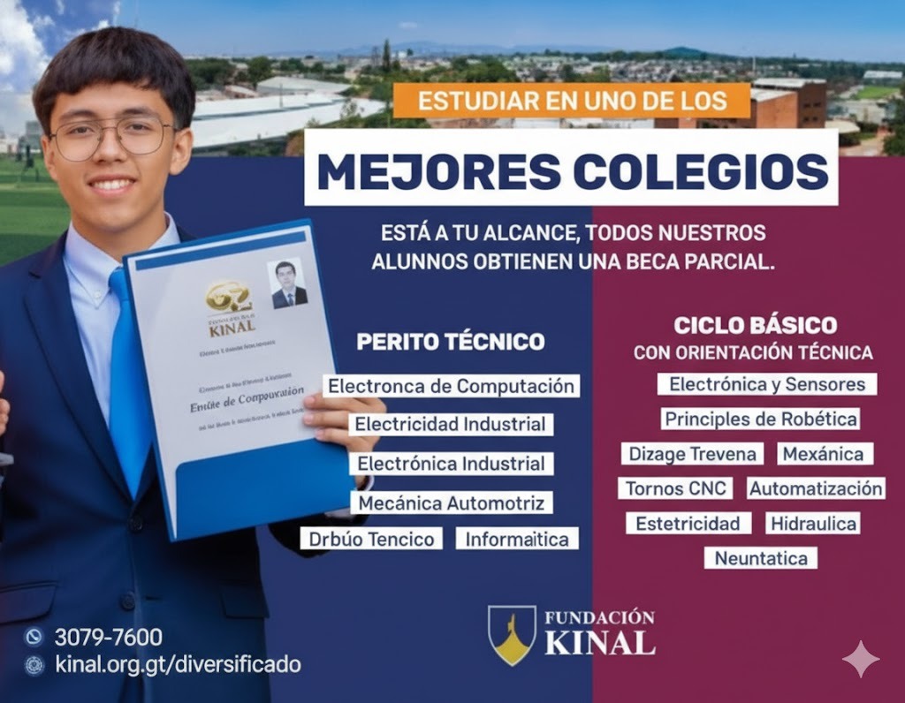
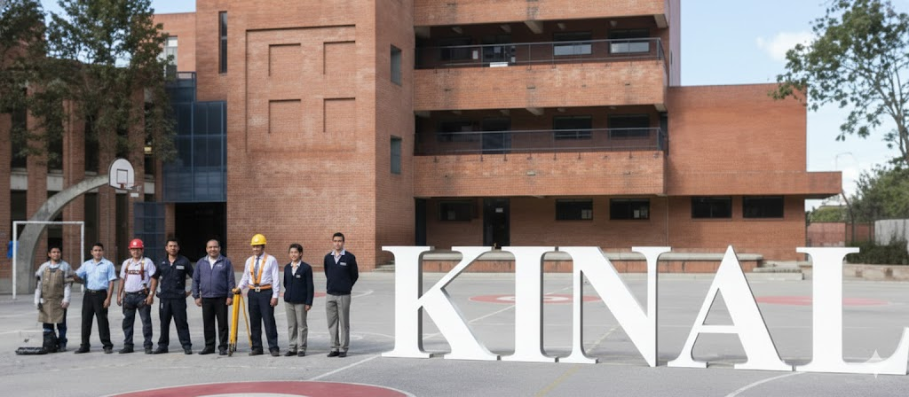
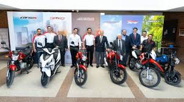
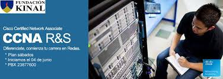
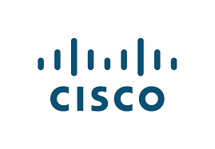
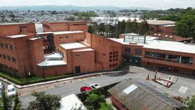

¿ Por que somos el mejor colegio laboral de Guatemala
Kinal es considerado el mejor centro técnico laboral de Guatemala porque combina una formación práctica de alta calidad con un enfoque profundamente humano, preparando a sus estudiantes no solo para conseguir un empleo, sino para crecer como personas y profesionales; cuenta con docentes con experiencia real en la industria, programas actualizados según las necesidades del mercado laboral, modernas instalaciones y fuertes vínculos con empresas, lo que facilita la inserción laboral, mientras fomenta valores como la responsabilidad, el esfuerzo y el trabajo en equipo, creando un ambiente donde cada estudiante es acompañado, motivado y apoyado para alcanzar sus metas y construir un mejor futuro.

Carreras Ejercidas en Kinal 2026
Kinal ofrece una amplia variedad de carreras técnicas orientadas al mundo laboral, entre las que destacan Informática, Electrónica, Electricidad Industrial, Mecánica Automotriz, Mecánica Industrial, Telecomunicaciones y Redes, brindando a los estudiantes una formación práctica y actualizada que les permite integrarse rápidamente al mercado laboral o continuar su desarrollo profesional con bases sólidas.
- Informática
- Electrónica
- Electricidad Industrial
- Mecánica Automotriz
- Mecánica Industrial
- Telecomunicaciones y Redes
- Refrigeración y Aire Acondicionado
- Instalaciones Eléctricas Residenciales e Industriales
- Soporte Técnico en Computación

Protrocinadores de Kinal
Kinal cuenta con el valioso apoyo de empresas e instituciones que creen en la educación técnica como una herramienta de transformación social. Gracias a estos patrocinadores, muchos estudiantes pueden acceder a una formación de calidad, becas y mejores oportunidades laborales.
- Banco Industrial
- Honda Guatemala
- Cisco Networking Academy
- Fundación Juan Bautista Gutiérrez
- Empresas del sector industrial y tecnológico
- Aliados nacionales e internacionales comprometidos con la educación



Instalaciones Kinal
Fundación Kinal cuenta con amplias y bien equipadas instalaciones diseñadas para la formación técnica y humana, incluyendo aulas modernas, talleres especializados en electricidad, electrónica, mecánica automotriz, refrigeración, soldadura, laboratorios de computación, biblioteca, auditorios, oratorio, cafetería y zonas deportivas, todo pensado para dar una educación práctica y completa a sus estudiantes; estas instalaciones permiten que los alumnos trabajen directamente con herramientas y equipos similares a los del campo laboral real. Además, su campus se encuentra estratégicamente ubicado en 6A Avenida 13-54, Colonia Landívar, Zona 7, Ciudad de Guatemala, Guatemala, facilitando el acceso desde diferentes áreas de la ciudad y conectividad con las principales rutas de transporte, lo que la convierte en una opción accesible y central para quienes buscan una formación técnica integral.

Trabajo Bien Hecho
El lema “El trabajo bien hecho” representa el compromiso de Kinal con la excelencia, la responsabilidad y el esfuerzo constante, enseñando a los estudiantes a realizar cada tarea con dedicación, calidad y ética, no solo para cumplir, sino para dar lo mejor de sí mismos en su vida académica, profesional y personal.
- Responsabilidad
- Disciplina
- Respeto
- Honestidad
- Compromiso
- Esfuerzo y perseverancia
- Trabajo en equipo
- Ética profesional
- Solidaridad
- Superación personal